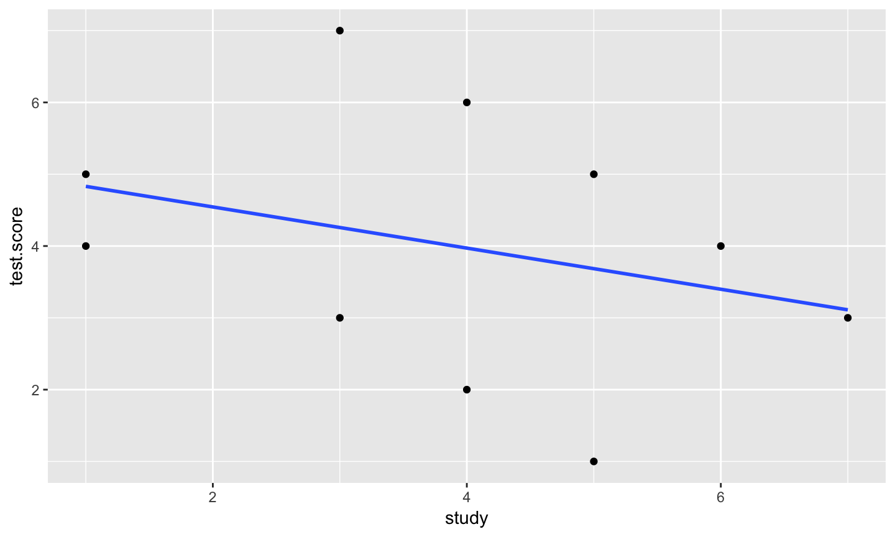
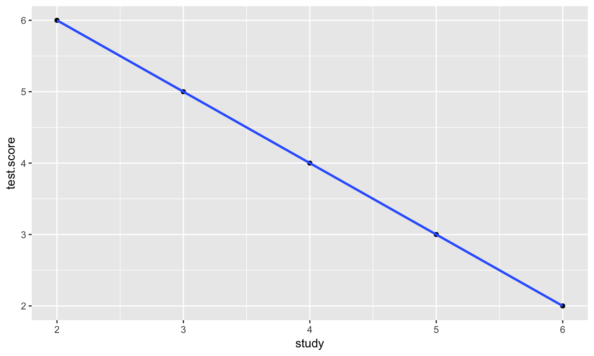
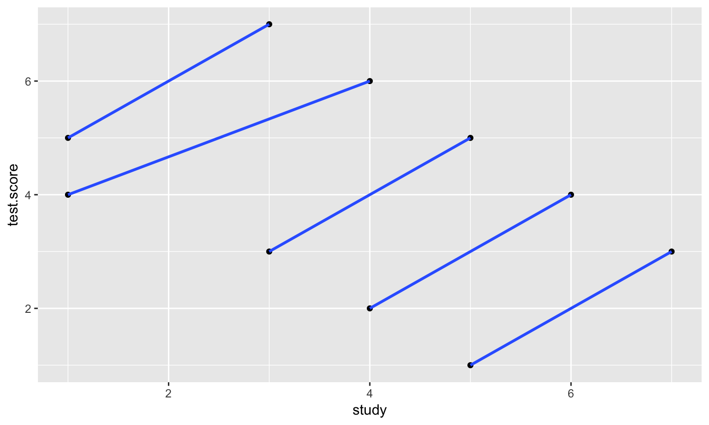
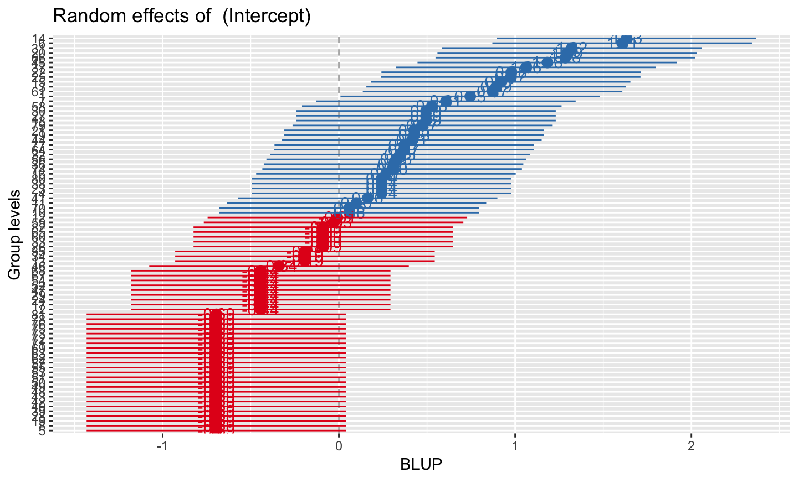
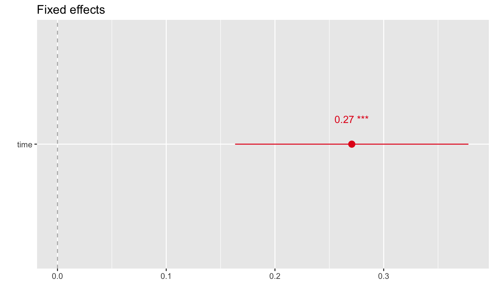
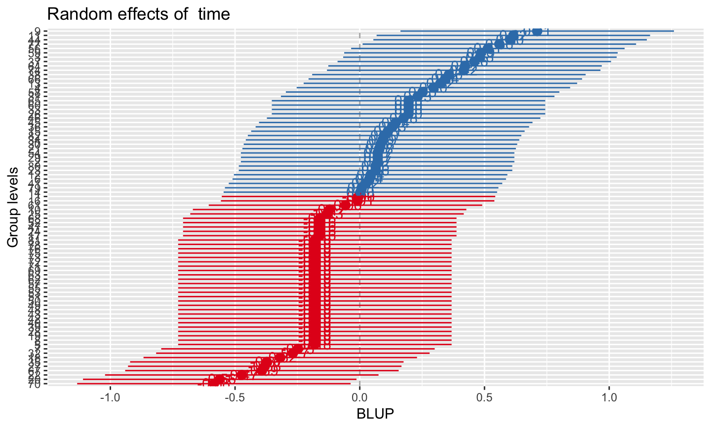
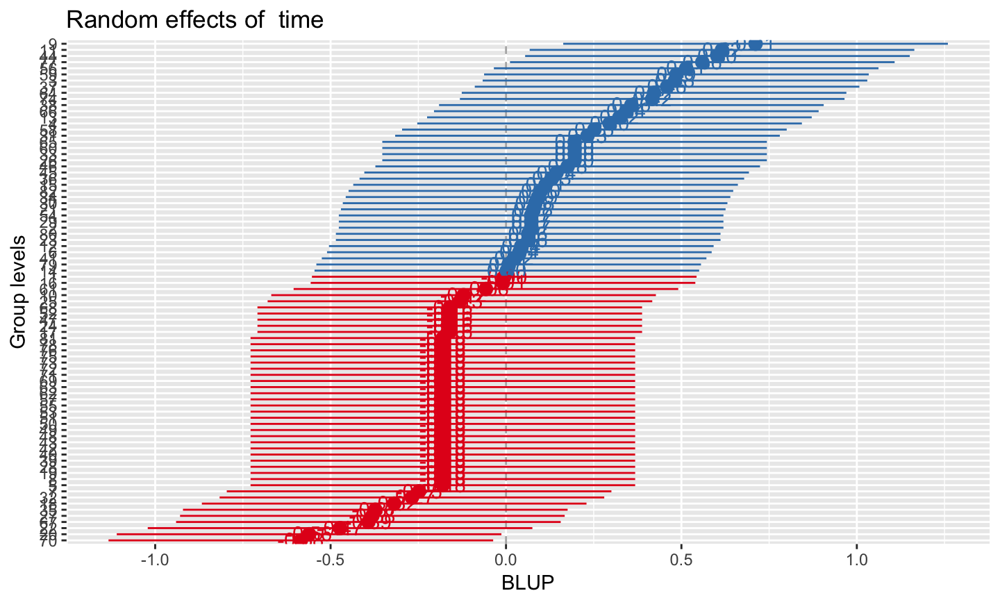
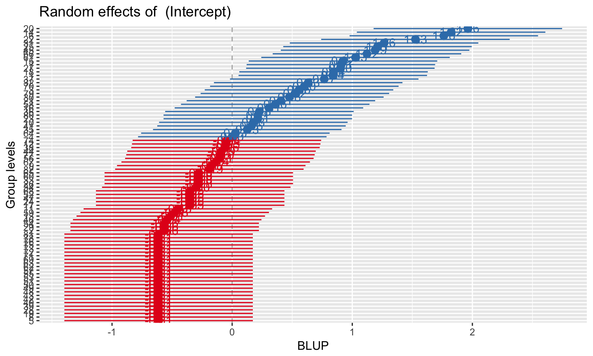
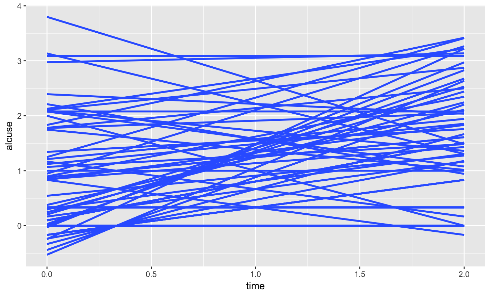

- We might want to assess people more than once
- We might want to assess within groups/nested structures
Expanding our toolkit
Outline
- Repeated Measures ANOVA (RM ANOVA)
- "Mixed" models aka Multilevel models (MLM), hierarchical linear models (HLM), random-effects models, and more…
Repeated measures ANOVA
- one-way RMANOVA (within subjects ANOVA)
- can also do a mixed designs (both between and within) sometimes refered to as split-plot
terminology aside
- SS between-groups and SS within-groups
- between-subjects and within-subjects designs
why would we want to do this?
- our primary interest may be to study the change of an outcome over time, e.g., a learning effect.
- multiple outcomes for each subject allows each subject to be his or her own “control”. This allows us to remove subject-to-subject variation (i.e., individidual differences), and likely increasing power
- When would we not want to do this?
one way RM ANOVA
- extension of the paired t-test
- E.g.
- A measure before, during and after a intervention
- A measure repeated across multiple conditions such as condition A, condition B, and condition C
- Three or more timepoints (seconds, years, grades)
- A measure before, during and after a intervention
traditional way (univariate) vs "new" way (multivariate MANOVA)
- different ways to overcome violation of independence
- rabbit hole of complexity that is mostly not worth it…
- because there are newer and better methods
- nevertheless, let us persist
SS decomposition
- SS between: Deviation of subjects' individual means (across treatments) from the grand mean.
- In the RMANOVA, this is largely uninteresting, as we can pretty much assume that ‘subjects differ’
| ID | wine #1 | #2 | #3 | #4 | Mean |
|---|---|---|---|---|---|
| 1 | 2 | 5 | 3 | 3 | 3.25 |
| 2 | 4 | 6 | 5 | 4 | 4.75 |
| 3 | 5 | 7 | 4 | 5 | 5.25 |
| 4 | 3 | 4 | 3 | 4 | 3.5 |
| 5 | 6 | 7 | 6 | 5 | 6.0 |
| 6 | 2 | 5 | 4 | 3 | 3.5 |
| 7 | 4 | 5 | 6 | 4 | 4.75 |
| mean | 3.63 | 5.63 | 4.38 | 4.25 |
SS decomposition
- SS within: how subjects vary about their own mean
- Compared to between subjects ANOVA, SS residual (within) is split into 2 different components:
- SStreatment
- As in between subjects ANOVA, comparison of treatment marignal means to grand mean
- now a part of the within subjects variation
- SS residual
- Variability of individuals’ scores about their treatment mean
- SS residual still is our measure of leftover error variance
- Smaller error term compared to between subjects
post hoc tests
- If the overall ANOVA yields a significant result one can test:
- pair-wise comparisons
- linear, quadratic trends
- pair-wise comparisons
more complex RM designs
- involve interactions
- involve between person (and/or more within person) variables
- involve multiple SS residual terms
Interactions
\[ Y_{ijk} = \mu + \eta_{j} + \alpha_{k} + \eta \alpha_{jk}+\varepsilon_{ijk} \]
- The interaction variance contributes to both subjects and A factor SSs
- Decreased power (interaction adds noise to error term)
- May increase sphericity
Mixed designs
- Between and within factor
- Wine tasting by groups (sophomores, sommeliers, souses)
- Are some wines rated better? (within)
- Do groups rate wine differently (between)
- Do sommeliers especially dislike merlot? (within- between subjects interaction)
- Interactions are now interpretable
Problems with RM ANOVA
The sphericity assumption (also known as the homogeneity of variance of differences assumption) assumes the variance of the differences between any two levels of a within subjects factor (e.g,. condition, time) is equivalent
Greenhouse-Geisser Epsilon, Huynh-Feldt Epsil, Pillai’s Trace, Wilk’s Lambda, Hotelling’s Trace, and Roy’s Largest Root
- adjusts df if violated
but unlikely to find this with observational data
Problems with RM ANOVA
- complete data, no missing cases (unless you do RM MANOVA)
- spacing is same for all time points (and subjects)
- does not handle continuous data
- cannot do time varying covariates
- no individaul level trends
which is why you should use
- MLM, HLM, mixed models, mixed effects, random effects models, etc.
Nesting and heirarchy
- students within schools
- observations within people
- members witin family
- people within counties
- observations within people within classrooms within grades within schools within districts within counties within states
- ignoring this grouping leads to more unexplained variablity
- innacurate comparisons (e.g. simpson's paradox)
Example
library(tidyverse) simp<- frame_data( ~ID, ~group, ~test.score, ~study, 1,1,5,1, 2,1,7,3, 3,2,4,1, 4,2,6,4, 5,3,3,3, 6,3,5,5, 7,4,2,4, 8,4,4,6, 9,5,1,5, 10,5,3,7)

could aggragate across group
simp.1<- frame_data( ~ID, ~group, ~test.score, ~study, 1,1,6,2, 2,2,5,3, 3,3,4,4, 4,4,3,5, 5,5,2,6)

what about at the individual level?

Aggregating is bad
- Especially when it is easy to take into account
- Cons of aggregating:
- reduced power
- change the unit of analysis and thus change the meaning
- more difficult to make inferences
- reduced power
Examining the different levels is good
Extracurricular activity (EA) and time spent studying
Between person H1: Do students who participate in EA spend more time studying?
Within person H2: When a student is participating in EA, do they spend more time studying (e.g., in-season vs. offseason)?
Notice that H1 and H2 are independent from one another!
fixed effects regression
\[ \hat{Y}_{i} = b_{0} + b_{1}X_{1} + b_{2}X_{2} + b_{3}X_{3}+...\] - parameters are considered fixed, only one value
- can be thought of as purposefully selected or existing values of a variable; can only generalize to particular values used
fixed effects regression
- easy to see in ANOVA models
\[ Y_{ij} = \mu + \alpha_{j}+e_{ij}\] - \(\alpha\) is the fixed effect if group j - we don't randomly select treatments, paradigms are purposely created to test a particular manipulation - or are they? How many types of sad movies can you come up with?
random effects
- Can have random parameters that are not fixed, have many values
- 2 ways to think about random
- randomly selected from the population (e.g., stimuli are 3 random depression drugs)
- random as in they are sampled from some population and thus can vary
- random effects means that your parameters are predicted and thus have error associated with them
- Use fixed effects if
- The groups are regarded as unique entities
- If group values are determined by researcher through design or manipulation
- Use random effects if
- Groups regarded as a sample from a larger population
- Understand group differences
- Account for more
- what does a random intercept mean?
\[ {Y}_{ij} = \beta_{0j} +\varepsilon_{ij} \]
\[ {\beta}_{0j} = \gamma_{00} + U_{0j} \]
graphically what does this look like?
- different intercepts for each j unit, a random effects model.
- repeated assessments of happiness taken daily for two weeks
- think about this as per subject
putting it together
\[ {Y}_{ij} = \beta_{0j} +\varepsilon_{ij} \]
\[ {\beta}_{0j} = \gamma_{00} + U_{0j}\]
\[ {Y}_{ij} = \gamma_{00} + U_{0j} + \varepsilon_{ij} \] - two random terms, two types of variances
Level 1 vs Level 2
- Level 1 is the smallest unit of analysis
- students, observations, family members
- Level 2 variables are constant for all level 1 variables that are “nested” in it
- schools, counties, families, dyads
Random intercepts, fixed slopes
Level 1: \[ {Y}_{ij} = \beta_{0j} + \beta_{1j}X_{1} + \varepsilon_{ij} \]
Level 2:
\[ {\beta}_{0j} = \gamma_{00} + U_{0j}\]
\[ {\beta}_{1j} = \gamma_{10} \]
Putting it together: \[ {Y}_{ij} = \gamma_{00} + \gamma_{10} (X_{1})+ U_{0j} + \varepsilon_{ij} \]
What does this look like graphically?
- think of as an individual regressoin for each person
- because intercept are random, people can vary
- because slopes are fixed, people have the same slope
- two types of residuals:
- represents how much variability there is in the intercepts from person to person
- based on individual scores from their predicted score, much like around the regression line
Random intercepts, random slopes
Level 1: \[ {Y}_{ij} = \beta_{0j} + \beta_{1j}(X_{1}) + \varepsilon_{ij} \]
Level 2:
\[ {\beta}_{0j} = \gamma_{00} + U_{0j}\]
\[ {\beta}_{1j} = \gamma_{10} + U_{1j} \]
Putting it together: \[ {Y}_{ij} = \gamma_{00} + \gamma_{10}(X_{1})+ U_{0j} + U_{1j} (X_{1})+ \varepsilon_{ij} \]
adding covariates and predictors
- can add covariates and predictors at level 1 and level 2
Estimation
- Maximum Likelihood
- Bayesian Estimation
Data structure
- long vs wide
- use tidyr to convert
Unconditional model
Level 1: \[ {Y}_{ij} = \beta_{0j} +\varepsilon_{ij} \]
Level 2: \[ {\beta}_{0j} = \gamma_{00} + U_{0j}\]
Combined: \[ {Y}_{ij} = \gamma_{00} + U_{0j} + \varepsilon_{ij} \]
ICC:
\[\frac{U_{0j}}{U_{0j}+ \varepsilon_{ij}}\]
- % variation between vs within group (person) variance
Example
alcohol1
## # A tibble: 246 × 9 ## id age coa male age_14 alcuse peer cpeer ccoa ## <int> <int> <int> <int> <int> <dbl> <dbl> <dbl> <dbl> ## 1 1 14 1 0 0 1.732051 1.2649111 0.2469111 0.549 ## 2 1 15 1 0 1 2.000000 1.2649111 0.2469111 0.549 ## 3 1 16 1 0 2 2.000000 1.2649111 0.2469111 0.549 ## 4 2 14 1 1 0 0.000000 0.8944272 -0.1235728 0.549 ## 5 2 15 1 1 1 0.000000 0.8944272 -0.1235728 0.549 ## 6 2 16 1 1 2 1.000000 0.8944272 -0.1235728 0.549 ## 7 3 14 1 1 0 1.000000 0.8944272 -0.1235728 0.549 ## 8 3 15 1 1 1 2.000000 0.8944272 -0.1235728 0.549 ## 9 3 16 1 1 2 3.316625 0.8944272 -0.1235728 0.549 ## 10 4 14 1 1 0 0.000000 1.7888544 0.7708544 0.549 ## # ... with 236 more rows
library(lme4) model.1 <- lmer(alcuse~ 1 + (1 | id), data = alcohol1) summary(model.1)
## Linear mixed model fit by REML ['lmerMod'] ## Formula: alcuse ~ 1 + (1 | id) ## Data: alcohol1 ## ## REML criterion at convergence: 673 ## ## Scaled residuals: ## Min 1Q Median 3Q Max ## -1.8892 -0.3079 -0.3029 0.6111 2.8562 ## ## Random effects: ## Groups Name Variance Std.Dev. ## id (Intercept) 0.5731 0.7571 ## Residual 0.5617 0.7495 ## Number of obs: 246, groups: id, 82 ## ## Fixed effects: ## Estimate Std. Error t value ## (Intercept) 0.9220 0.0963 9.574
library(reghelper) ICC(model.1)
## [1] 0.5050172=======
library(reghelper)
## ## Attaching package: 'reghelper'
## The following object is masked from 'package:psych': ## ## ICC
## The following object is masked from 'package:base': ## ## beta
ICC(model.1)
## [1] 0.5050172
library(sjPlot)
sjp.lmer(model.1, facet.grid = FALSE,
sort = "sort.all")

alcohol1$time <- alcohol1$age -14 model.2 <- lmer(alcuse ~ time + (1| id), data = alcohol1) summary(model.2)>>>>>>> 780f7577a252270721a2bdb46a39555798d4bcf9
library(sjPlot)
sjp.lmer(model.1, facet.grid = FALSE,
sort = "sort.all")
sjp.lmer(model.2, type="fe")
## Computing p-values via Kenward-Roger approximation. Use `p.kr = FALSE` if computation takes too long.

alcohol1$time <- alcohol1$age -14 model.2 <- lmer(alcuse ~ time + (1| id), data = alcohol1) summary(model.2)
model.3 <- lmer(alcuse ~ time + (1 + time| id), data = alcohol1) summary(model.3) ## Fixed effects are outside of the parenthesis ## and the random effects are inside<<<<<<< HEAD
## Linear mixed model fit by REML ['lmerMod'] ## Formula: alcuse ~ time + (1 + time | id) ## Data: alcohol1 ## ## REML criterion at convergence: 643.2 ## ## Scaled residuals: ## Min 1Q Median 3Q Max ## -2.48287 -0.37933 -0.07858 0.38876 2.49284 ## ## Random effects: ## Groups Name Variance Std.Dev. Corr ## id (Intercept) 0.6355 0.7972 ## time 0.1552 0.3939 -0.23 ## Residual 0.3373 0.5808 ## Number of obs: 246, groups: id, 82 ## ## Fixed effects: ## Estimate Std. Error t value ## (Intercept) 0.65130 0.10573 6.160 ## time 0.27065 0.06284 4.307 ## ## Correlation of Fixed Effects: ## (Intr) ## time -0.441<<<<<<< HEAD
library(lmerTest) summary(model.3)<<<<<<< HEAD
library(sjPlot)
sjp.lmer(model.3, facet.grid = FALSE,
sort = "sort.all")
 

library(sjPlot)
sjp.lmer(model.3,
sort = "sort.all")
## Sorting each group of random intercept ('sort.all') is not possible when 'facet.grid = TRUE'.
## Sorting each group of random intercept ('sort.all') is not possible when 'facet.grid = TRUE'.
## Plotting random effects...

ggplot(alcohol1, aes(x = time, y = alcuse, group = id)) + stat_smooth(method = "lm", se = FALSE)<<<<<<< HEAD


model.4 <- lmer(alcuse~ time + coa + coa*time + (time | id), data = alcohol1) summary(model.4)<<<<<<< HEAD
## Linear mixed model fit by REML t-tests use Satterthwaite approximations ## to degrees of freedom [lmerMod] ## Formula: alcuse ~ time + coa + coa * time + (time | id) ## Data: alcohol1 ## ## REML criterion at convergence: 631.9 ## ## Scaled residuals: ## Min 1Q Median 3Q Max ## -2.5522 -0.3827 -0.1063 0.3585 2.3708 ## ## Random effects: ## Groups Name Variance Std.Dev. Corr ## id (Intercept) 0.5068 0.7119 ## time 0.1586 0.3982 -0.23 ## Residual 0.3373 0.5808 ## Number of obs: 246, groups: id, 82 ## ## Fixed effects: ## Estimate Std. Error df t value Pr(>|t|) ## (Intercept) 0.31595 0.13232 80.00000 2.388 0.019307 * ## time 0.29296 0.08527 80.00000 3.435 0.000941 *** ## coa 0.74321 0.19698 80.00000 3.773 0.000308 *** ## time:coa -0.04943 0.12695 80.00000 -0.389 0.698034 ## --- ## Signif. codes: 0 '***' 0.001 '**' 0.01 '*' 0.05 '.' 0.1 ' ' 1 ## ## Correlation of Fixed Effects: ## (Intr) time coa ## time -0.460 ## coa -0.672 0.309 ## time:coa 0.309 -0.672 -0.460<<<<<<< HEAD
tidy(model.4)
## term estimate std.error statistic group ## 1 (Intercept) 0.31595172 0.13231891 2.3878047 fixed ## 2 time 0.29295517 0.08527403 3.4354557 fixed ## 3 coa 0.74321203 0.19698266 3.7729821 fixed ## 4 time:coa -0.04942994 0.12694713 -0.3893742 fixed ## 5 sd_(Intercept).id 0.71189636 NA NA id ## 6 sd_time.id 0.39821932 NA NA id ## 7 cor_(Intercept).time.id -0.22943387 NA NA id ## 8 sd_Observation.Residual 0.58076865 NA NA Residual<<<<<<< HEAD
example <- sleepstudy %>% mutate(A = ifelse(Days < 5, -1, 1)) %>% select(Subject, A, Reaction) example$A <- as.factor(example$A)<<<<<<< HEAD


ex.1 <- lmer(Reaction ~ A + (1|Subject), data = example) summary(ex.1)
## Linear mixed model fit by REML t-tests use Satterthwaite approximations ## to degrees of freedom [lmerMod] ## Formula: Reaction ~ A + (1 | Subject) ## Data: example ## ## REML criterion at convergence: 1813.8 ## ## Scaled residuals: ## Min 1Q Median 3Q Max ## -2.5154 -0.6952 0.0217 0.6144 3.5380 ## ## Random effects: ## Groups Name Variance Std.Dev. ## Subject (Intercept) 1358 36.85 ## Residual 1163 34.11 ## Number of obs: 180, groups: Subject, 18 ## ## Fixed effects: ## Estimate Std. Error df t value Pr(>|t|) ## (Intercept) 271.630 9.400 19.780 28.90 <2e-16 *** ## A1 53.755 5.085 161.010 10.57 <2e-16 *** ## --- ## Signif. codes: 0 '***' 0.001 '**' 0.01 '*' 0.05 '.' 0.1 ' ' 1 ## ## Correlation of Fixed Effects: ## (Intr) ## A1 -0.270<<<<<<< HEAD
library(sjPlot)
sjp.lmer(ex.1, facet.grid = FALSE,
sort = "sort.all")
<<<<<<< HEAD